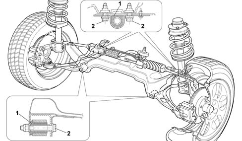
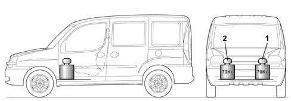
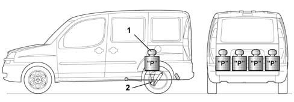

INTRODUCTION - SUSPENSION AND WHEELS
- Path
- Descriptions > 44 SUSPENSION AND WHEELS > INTRODUCTION - SUSPENSION AND WHEELS
- Kind
- system description
- Applies to
- engines: 1.2 8v, 1.6 16v, 1.3 JTD 16V, 1.9 JTD 8V, 1.9 DIESEL; all production periods
- Interactive page
- https://sloeber94.github.io/elrnDB-fDbl/en/#/223000238
Applies to: engines: 1.2 8v, 1.6 16v, 1.3 JTD 16V, 1.9 JTD 8V, 1.9 DIESEL; all production periods
Front suspension, independent, McPherson type with forged steel track control arms anchored to an auxiliary crossmember.
Offset coil springs and double acting, telescopic, hydraulic shock absorbers. Anti-roll torsion bar.
The rear suspension is the 'rigid axle' type with single leaf springs and double acting, telescopic hydraulic shock absorbers.
For the Panorama versions there are also plans for a rear torsion beam which, secured to the chassis and connected to the ends of the wheel hubs, makes it possible during the compression of the leaf spring, to reduce the roll effect improving driving comfort.
The front and rear wheel hubs on versions equipped with A.B.S. have an instrument bearing for the active sensors (see group 33) which replaces the flywheel on previous systems.
Maintenance instructions
The presence of flexible bushes on the suspension components means that, in the case of maintenance operations, the specific fitting instructions must be carried out to ensure the correct operating conditions for these bushes.
The incorrect pre-loading of the flexible elements (1) can, in effect, lead to them reaching breaking point during operation.
It is therefore necessary to tighten the fixing elements (2) after having made sure that the load conditions acting on the flexible components do not exceed those in the 'Theoretical design load' for the operation of the vehicle.

Maintenance instructions
The 'Theoretical Design Load' is obtained with the wheels fitted and the vehicle on the ground ballasting the front footwell area with a load of about 70 kg on both the right side (1) and the left side (2) for the front suspension.

Maintenance instructions
For the rear suspension, the load (1) should be arranged evenly near the rear axle (2) according to the version with instructions given in the table below.

Maintenance instructions
VERSION | LOAD |
|---|---|
Panorama | kg. 350 |
Van | kg. 510 |
Extra-load van | kg. 660 |